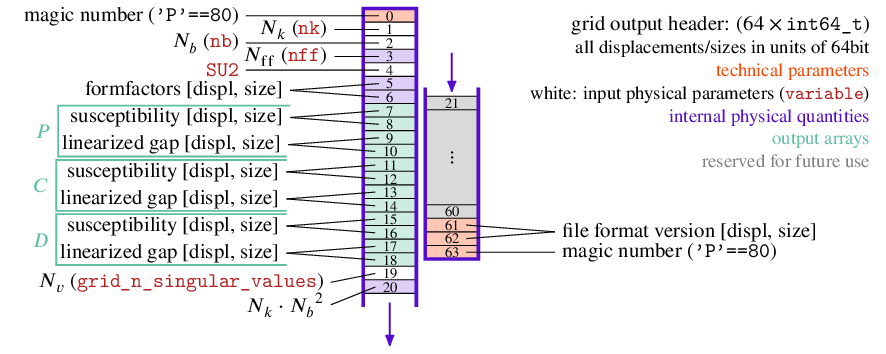
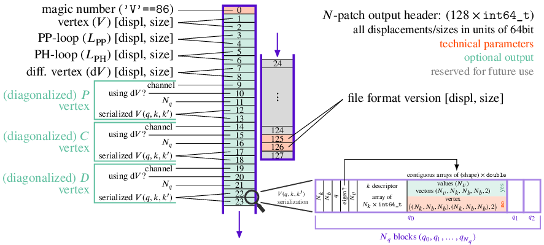
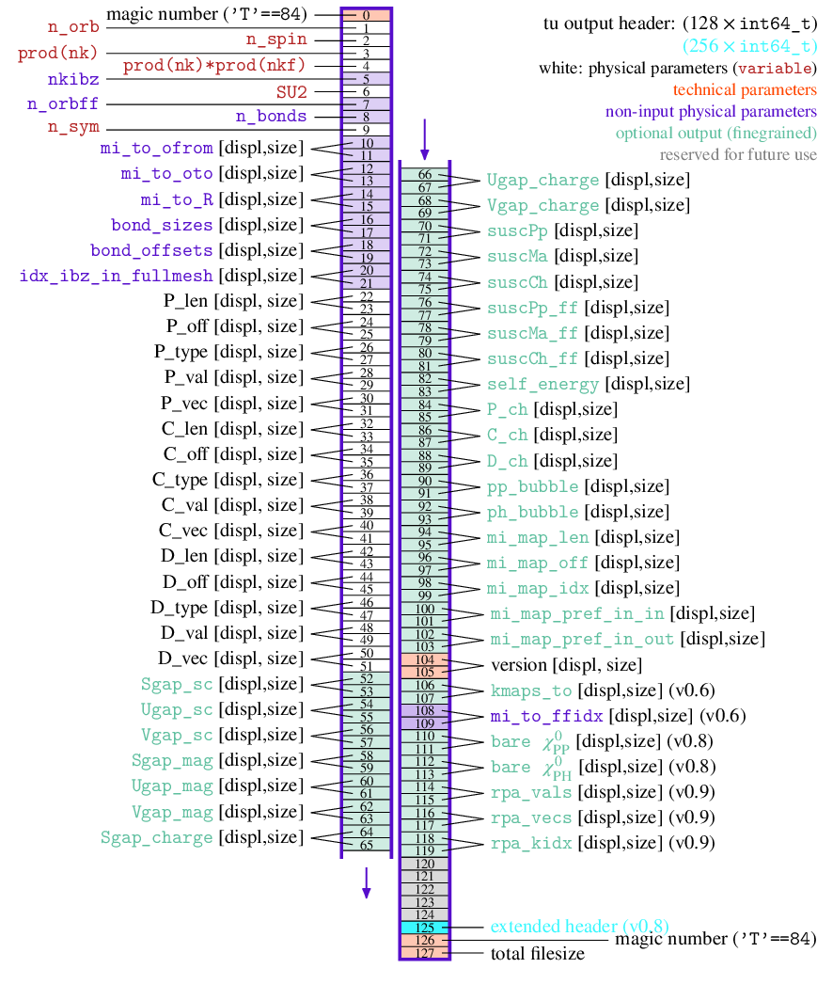

Postprocessing and Output¶
-
struct diverge_postprocess_conf_t¶
[source] Default values are obtained using
diverge_postprocess_conf_defaults_CPP()from C/C++/Python and the static constant variablediverge_postprocess_conf_defaultsfrom C.Note
This documentation does not include the defaults directly, but they are given in the (linked) source file
src/diverge_post.h.Note
Member variables with prefix are used as follows
patch_used with the patch backend
grid_used with the grid backend
tu_used with the tu backend
-
double patch_q_matrices_max_rel¶
[source] restrict analysis to q_norm <= <val>. if <0 or >1, no restriction.
-
char patch_q_matrices_eigen_which¶
[source] sort q matrices eigenvalues by ‘M’agnitude, ‘P’ositive, ‘N’egative, or ‘A’lternating values
-
char grid_lingap_vertex_file_P[MAX_NAME_LENGTH]¶
[source] output the q=0 linearized gap vertex of the P channel to the file (if != “”)
-
char grid_lingap_vertex_file_C[MAX_NAME_LENGTH]¶
[source] output the q=0 linearized gap vertex of the C channel to the file (if != “”)
-
char grid_lingap_vertex_file_D[MAX_NAME_LENGTH]¶
[source] output the q=0 linearized gap vertex of the D channel to the file (if != “”)
-
int grid_n_singular_values¶
[source] number of singular values to save for the lineraized gap solutions
-
char tu_which_solver_mode¶
[source] choose how to handle non hermitian entries of the channel diagonalization. options: ‘a’(utomatic), ‘s’(vd), ‘e’(igen), ‘b’(atched eigen), ‘B’(atched SVD)
-
int tu_skip_channel_calc¶
[source] if true, the eigenvectors of each channel are not calculated. useful for RPA calculations
-
double tu_storing_threshold¶
[source] sets a theshold above which all eigen/singular vectors will be stored (magnitude)
-
index_t tu_n_singular_values¶
[source] number of singular/eigen values to save for the lineraized gap solutions
-
int tu_symmetry_maps¶
[source] store the symmetry transfromations for the left multiindex (works for eigenvectors)
-
index_t tu_n_decomp_values¶
[source] store the N leading values of the channel eigendecomposition/SVD. ignored if zero
-
int tu_lingap_atscale¶
[source] use the at-scale propagator instead of the integrated one in the linearized gap, useful for RPA
-
char tu_lingap_solver_mode[4]¶
[source] choose how to handle diagonalizations in the linearized gap equations for each of the channels (PCD, as index), useful for RPA. options:
's'(svd),'E'(eigen, sort by absolute value),'e'(eigen, sort alternating),'t'(eigen, sort from largest),'b'(eigen, sort from smallest)
-
static const diverge_postprocess_conf_t diverge_postprocess_conf_defaults¶
[source] defaults for C
-
diverge_postprocess_conf_t diverge_postprocess_conf_defaults_CPP(void)¶
[source] return default values in C, C++, and Python
-
void diverge_postprocess_and_write(diverge_flow_step_t *st, const char *file)¶
[source] Post-processing and output to disk as .dvg file. Those files can be read by the
diverge.outputPython library (see Simulation Output). File format specification depends on the chosen backend. In general, the header (shown in the figures) is followed by data. For the TUFRG backend, displacements are in bytes while sizes are in units of the respective datatype. For the other backends, all units areindex_t(i.e. 64bit). Default values fromdiverge_postprocess_conf_t(i.e.diverge_postprocess_conf_defaults_CPP()) are taken. For more control, usediverge_postprocess_and_write_finegrained()or its pyhton wrapperdiverge.postprocess_and_write_PY().Grid-FRG:

Patch-FRG:

TUFRG:



-
void diverge_postprocess_and_write_finegrained(diverge_flow_step_t *st, const char *file, const diverge_postprocess_conf_t *cfg)¶
[source] same as
diverge_postprocess_and_write()but with control over the parameters indiverge_postprocess_conf_t.diverge_postprocess_and_write()uses the defaults (diverge_postprocess_conf_defaultsordiverge_postprocess_conf_defaults_CPP()).